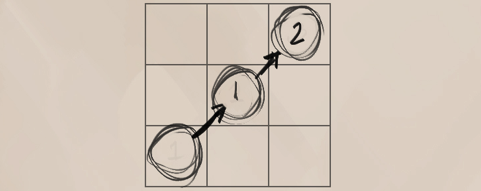

Movement is the representation of how quickly a character moves through the world. The movement attribute is generally unused outside of dangerous situations or combat. While combat is active, movement is shown as 1 for each tile, with diagonals counting as 1 and a half. A character can move through these tiles at the rate of their chosen movement as long as they are not yet occupied or are of a small enough stature.
This determines the ease of travel for the character upon different terrains.
Perfect : The character may move freely in any direction.
Good : The character cannot move in diagonals, but can turn direction in the same move action.

Rough : The character can only move in a straight line and must take a second move action to turn.

A character may use two movement actions in a turn to sprint. If so used, they may add +1 to their total movement, with an additional +1 per 5 base movement speed.
Though swimming and climbing are skill actions, they are technically movement sub-sets as well. Characters who attempt to swim through deep waters or climb steep mountain-sides may do so only if they pass the skill check first.
Characters that have a flying movement speed may use it instead of their running move. Their distance from the ground (moving “up”) counts as part of the movement as well and must be kept note of. Flight can only be used if the character is in their Light or lower lifting capacity. (See lifting capacity.)
Falling is commonplace in areas of danger. Cliffs, traps, ravines and ledges are all obstacles where falling is possible. Falling penalties increase the further the distance fallen. The penalties of the fall can be reduced by a successful tumble skill action.
Light Fall : Falling dangers begin once the drop is greater than 2 tiles more than their height. The character then takes i lethal damage per further tile. The DC of the tumble is equal to the total number of tiles fallen.
Medium Fall : If a fall is greater than 5 tiles (+1 per size), then the character instead takes 2 lethal damage per distance fallen. The DC of the tumble is equal to the total number of tiles fallen.
Great Fall : If a fall is greater than 8 tiles (+1 per size), then the character takes 4 lethal damage per distance fallen. The DC of the tumble is equal to 2x the total number of tiles fallen
Size Difference : Creatures larger than medium size increase the total damage taken by 2 per size category. Creatures smaller than medium size decrease the total damage taken by i per size category.
Most land species of Avorkath cannot breathe underwater, however may hold their breath a number of rounds equal to their constitution score + 1 per size smaller than medium. Afterwards, they take 1 lethal damage per round.